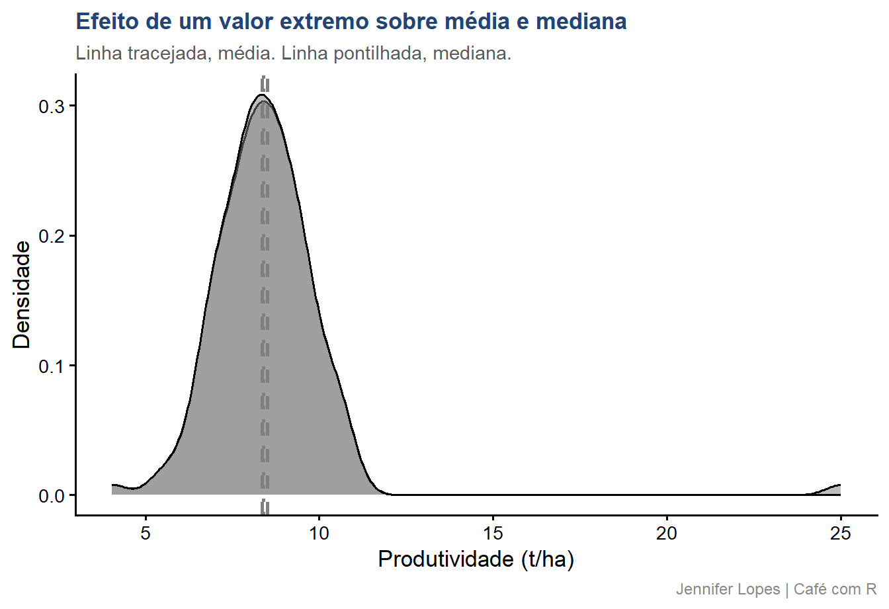

Aula 31. Média não é tudo: tendência central e dispersão
Moda, mediana, médias geométrica e harmônica, variância, CV e MAD, com o caso do outlier que desloca a média sem mover a mediana
R
Estatística
Descritiva
Tidyverse
Domine as cinco medidas de tendência central e as principais medidas de dispersão, e entenda por que a média sozinha pode distorcer a leitura dos dados.
Democratização
Esta aula continua diretamente da Aula 27. Os dados simulados são os mesmos, produtividade do híbrido H2 em 10.000 parcelas agronômicas. A amostra de 120 parcelas extraída anteriormente é reutilizada aqui para garantir continuidade nos resultados.
Calcular e interpretar as cinco medidas de tendência central, média aritmética, mediana, moda, média geométrica e média harmônica
Calcular e interpretar as principais medidas de dispersão, variância, desvio padrão, amplitude, IQR, MAD e CV%
Identificar quando a média deixa de representar bem o centro dos dados
Comparar a robustez da mediana e do MAD frente a valores extremos
Reconhecer os erros mais frequentes na escolha e no relato dessas medidas
Bloco 1
Medidas de Tendência Central
Média aritmética
A média aritmética é a soma dos valores dividida pelo número de observações.
\[\bar{x} = \frac{1}{n} \sum_{i=1}^{n} x_i\]
Cada observação entra no cálculo com o mesmo peso, incluindo valores extremos.
No contexto agronômico: a produtividade média das 120 parcelas amostradas resume o centro da distribuição, desde que ela seja aproximadamente simétrica.
Important
Atenção: a média é sensível a valores extremos. Um único valor discrepante desloca seu resultado, mesmo que represente um erro de medição ou um evento isolado.
Mediana
A mediana é o valor que ocupa a posição central dos dados ordenados.
\[\tilde{x} = \begin{cases} x_{(n+1)/2} & \text{se } n \text{ é ímpar} \\ \dfrac{x_{(n/2)} + x_{(n/2+1)}}{2} & \text{se } n \text{ é par} \end{cases}\]
Depende apenas da posição dos valores, não de sua magnitude.
No contexto agronômico: a mediana permanece estável mesmo diante de uma leitura de produtividade fisiologicamente implausível.
Moda
A moda é o valor ou categoria de maior frequência no conjunto de dados.
É a única medida de tendência central aplicável a variáveis qualitativas.
No contexto agronômico: entre os tipos de solo amostrados, argiloso, arenoso e franco, a moda identifica a classe predominante.
Em variáveis contínuas, a moda é obtida após arredondamento ou agrupamento em classes, e pode não ser única.
Média geométrica
A média geométrica é a raiz de ordem \(n\) do produto dos valores.
A proximidade entre média, mediana e as médias geométrica e harmônica confirma que esta amostra segue distribuição aproximadamente simétrica, sem valores próximos de zero ou taxas multiplicativas envolvidas.
Bloco 2
Medidas de Dispersão
Variância e desvio padrão
Medida
Definição
Interpretação
Variância
\(s^2 = \dfrac{\sum(x_i - \bar{x})^2}{n-1}\)
Dispersão média ao quadrado
Desvio padrão
\(s = \sqrt{s^2}\)
Dispersão na mesma unidade dos dados
O desvio padrão descreve a variabilidade dos dados individuais em torno da média, e não deve ser confundido com o erro padrão da média, que descreve a precisão da estimativa.
Amplitude e IQR
Medida
Definição
Interpretação
Amplitude
\(x_{max} - x_{min}\)
Alcance total dos dados
IQR
\(Q_3 - Q_1\)
Alcance dos 50% centrais dos dados
A amplitude é determinada exclusivamente pelos dois valores extremos, e ignora toda a estrutura intermediária da distribuição.
O IQR é uma medida de dispersão robusta, pouco sensível a valores atípicos.
MAD, desvio absoluto mediano
O MAD é a mediana dos desvios absolutos em relação à mediana, multiplicada por uma constante de consistência.
A constante 1,4826 torna o MAD comparável ao desvio padrão sob distribuição normal.
É o análogo robusto do desvio padrão, apropriado quando há suspeita de valores extremos nos dados.
Coeficiente de variação, CV%
\[CV = \frac{s}{\bar{x}} \times 100\]
Expressa a dispersão em termos relativos à média, permitindo comparar variáveis com unidades ou magnitudes diferentes.
No contexto agronômico: CV abaixo de 15% indica variabilidade experimental baixa a moderada, valor referencial comumente adotado na experimentação agronômica.
Important
Atenção: CV% alto não significa necessariamente falha experimental. Algumas variáveis, como contagens e proporções, apresentam CV% elevado por característica intrínseca.
O CV próximo de 14% está de acordo com o valor esperado para dados de produtividade gerados a partir de uma distribuição normal com desvio padrão de 1,20 t/ha e média de 8,45 t/ha.
Bloco 3
Quando a Média Engana
Cenário: um erro de registro na amostra
Suponha que, durante a coleta, a produtividade de uma das 120 parcelas seja registrada como 25 t/ha, um valor fisiologicamente implausível para o híbrido H2.
Esse tipo de valor extremo pode ter origem em erro de digitação, falha do equipamento de colheita ou evento isolado não representativo do experimento.
A seguir, comparamos a amostra original com essa mesma amostra contendo o valor extremo.
bind_rows( amostra |>summarise(cenario ="Original", media =mean(produtividade),mediana =median(produtividade)), amostra_outlier |>summarise(cenario ="Com valor extremo", media =mean(produtividade),mediana =median(produtividade))) |>mutate(across(where(is.numeric), ~round(.x, 3)))
Output: média e mediana, antes e depois
# A tibble: 2 × 3
cenario media mediana
<chr> <dbl> <dbl>
1 Original 8.36 8.40
2 Com valor extremo 8.50 8.40
A média se desloca de forma perceptível com a inclusão de um único valor extremo, enquanto a mediana permanece praticamente inalterada, pois depende apenas da posição dos dados ordenados.
Código: visualização do deslocamento
Code
dados_cenarios <-bind_rows( amostra |>mutate(cenario ="Original"), amostra_outlier |>mutate(cenario ="Com valor extremo"))resumo_cenarios <- dados_cenarios |>group_by(cenario) |>summarise(media =mean(produtividade), mediana =median(produtividade),.groups ="drop")dados_cenarios |>ggplot(aes(x = produtividade, fill = cenario)) +geom_density(alpha =0.5) +geom_vline(data = resumo_cenarios,aes(xintercept = media, color = cenario),linetype ="dashed", linewidth =1) +geom_vline(data = resumo_cenarios,aes(xintercept = mediana, color = cenario),linetype ="dotted", linewidth =1) +scale_fill_manual(values =c("Original"= cores_cafe["azul_claro"],"Com valor extremo"= cores_cafe["marrom"])) +scale_color_manual(values =c("Original"= cores_cafe["azul_escuro"],"Com valor extremo"= cores_cafe["marrom"])) +labs(title ="Efeito de um valor extremo sobre média e mediana",subtitle ="Linha tracejada, média. Linha pontilhada, mediana.",x ="Produtividade (t/ha)",y ="Densidade",fill ="Cenário",color ="Cenário",caption ="Jennifer Lopes | Café com R") + tema
Gráfico: visualização do deslocamento

MAD e desvio padrão diante do mesmo valor extremo
O desvio padrão é calculado a partir dos quadrados dos desvios em relação à média, o que amplia o efeito de um valor extremo sobre seu resultado.
O MAD é calculado a partir da mediana dos desvios em relação à mediana, medida que permanece estável diante do mesmo valor extremo.
Essa diferença de comportamento é o motivo pelo qual o MAD é preferido como medida de dispersão em conjuntos de dados com suspeita de valores atípicos.
# A tibble: 2 × 3
cenario dp mad
<chr> <dbl> <dbl>
1 Original 1.24 1.22
2 Com valor extremo 1.96 1.23
O desvio padrão aumenta de forma acentuada com a inclusão do valor extremo, enquanto o MAD permanece praticamente no mesmo patamar, confirmando sua robustez.
Bloco 4
Erros Comuns
Erro 1, reportar a média sem medida de dispersão
Uma média sem desvio padrão, erro padrão ou intervalo de confiança é estatisticamente incompleta.
Reportar apenas o valor central impede o leitor de avaliar a variabilidade e a confiabilidade da estimativa.
Erro 2, usar a média em distribuição assimétrica
Quando a distribuição é claramente assimétrica, como contagem de insetos ou incidência de doença, a média deixa de representar bem o centro dos dados.
Nessas situações, a mediana ou a moda descrevem melhor o comportamento típico da variável.
Erro 3, confundir a robustez do MAD com a do desvio padrão
Tratar o MAD como equivalente ao desvio padrão desconsidera sua principal vantagem, a resistência a valores extremos.
Usar o desvio padrão em conjuntos de dados com suspeita de outliers sem avaliar o MAD como alternativa produz uma medida de dispersão inflada.
Erro 4, não reportar o CV% em tabela de resultado
O CV% é exigido pelas principais revistas agronômicas brasileiras, e por parte das internacionais, como indicador da qualidade experimental.
Omitir o CV% impede a avaliação comparativa da precisão entre experimentos com médias distintas.
Resumo: tendência central e dispersão
Medida
Robustez a outliers
Função no R
Quando usar
Média aritmética
Baixa
mean()
Distribuição simétrica, sem outliers
Mediana
Alta
median()
Distribuição assimétrica ou com outliers
Moda
Alta
Sem função nativa
Variáveis categóricas ou discretas
Média geométrica
Baixa
exp(mean(log()))
Taxas de crescimento, séries multiplicativas
Média harmônica
Baixa
n()/sum(1/x)
Razões, velocidades médias
Desvio padrão
Baixa
sd()
Dispersão em torno da média, dados simétricos
MAD
Alta
mad()
Dispersão robusta, suspeita de outliers
CV%
Baixa
sd()/mean()*100
Comparação de variabilidade entre experimentos
Obrigada!
Continue praticando e explorando.
Esta aula é parte do projeto Café com R. É open source. Use, compartilhe e adapte.
Siga o Café com R
Que cada gole desperte uma nova ideia.
Que cada script abra uma nova conversa.
Que o Café com R se torne um ponto de encontro nosso.